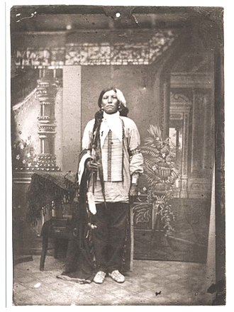

Індіанці
Індіа́нці — загальна назва корінного населення Америки (за винятком ескімосів і алеутів), яку їм дав мореплавець Христофор Колумб, оскільки вважав, що відкритий ним континент —Індія .
Зміст
Походження
Припускають, що азійські предки індіанців перейшли на територію Північної Америки 60-35 тисяч років тому по перешийкові між Сибіром і Аляскою,
що опустився в океан під час останнього льодовикового періоду
Довгий час антропологи вважали, що предків американських індіанців слід шукати у Північно-Східній Азії, тобто в нинішньому Сибіру. Проте останні дослідження мітохондріальних ДНК показують, що індіанці походять з Південно-Східної Азії.
Культура
У Північній Америці проживало близько 400 племен індіанців. Усі вони говорили різними мовами й не мали писемності. Однак 1826 року вождь племені черокі — Секвойя (Джордж Гесс) створив азбуку черокі, а 1828 почав видавати газету «Черокі Фенікс» мовою черокі. Степові індіанці користувалися піктографічним письмом. Також існували міжплемінні жаргони, до яких відносять загальну торговельну мову чікасо — «мобіле». Деякі племена широко користувалися мовою сигналів або мовою жестів. Основними інструментами мови сигналів були умовні пересування пішки або верхи, дзеркала. Для спілкування використовували й вампуми, які за потреби слугували індіанцям як гроші.
Поширення і чисельність
Основні племена індіанців
Докладніше: Класифікація корінних народів Америки
Відомі індіанці
Сидячий Бик
Сидя́чий Бик (близько 1831 — 15 грудня 1890) — вождь і духовний провідник індіанських племен племені хункпапа народу сіу, аціональний народний герой США
Шалений Кінь
Шалений Кінь (також Несамовитий Кінь, Скажений Кінь; англ. Crazy Horse; біля. 1840 - 5 вересня 1877) — військовий вождь племені оглала, що входив до союзу семи племен лакота. Секвойя
Секво́я (Джордж Гесс) (пр. 1767, Ноксвілл, Теннессі — 1843, Сан Фернандо, Тамауліпас, Мексика) — ювелір племені черокі, який створив письмо черокі в 1821 році. Засновник газети «Черокі Фенікс». Це єдиний зареєстрований випадок в історії, коли представник неписьменного народу незалежно створив систему письма. Після того як індіанці черокі побачили користь від писемності, вони стали її активно застосовувати та офіційно прийняли систему писемності в 1825 році. Секвоя був відомий також під іменами Джордж Гіст та Джордж Гесс. На честь Секвої названо роди рослин секвоя (Sequoia) і секвоядендрон (Sequoiadendron), а також Національний парк Секвої в Каліфорнії